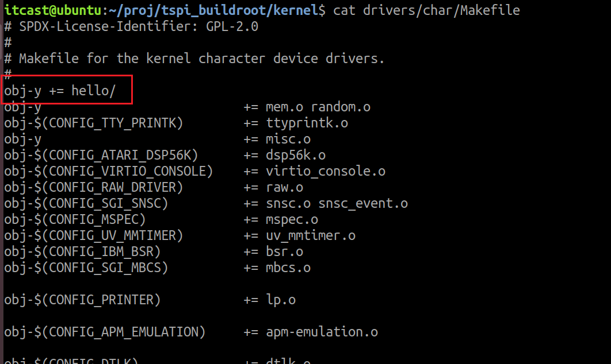
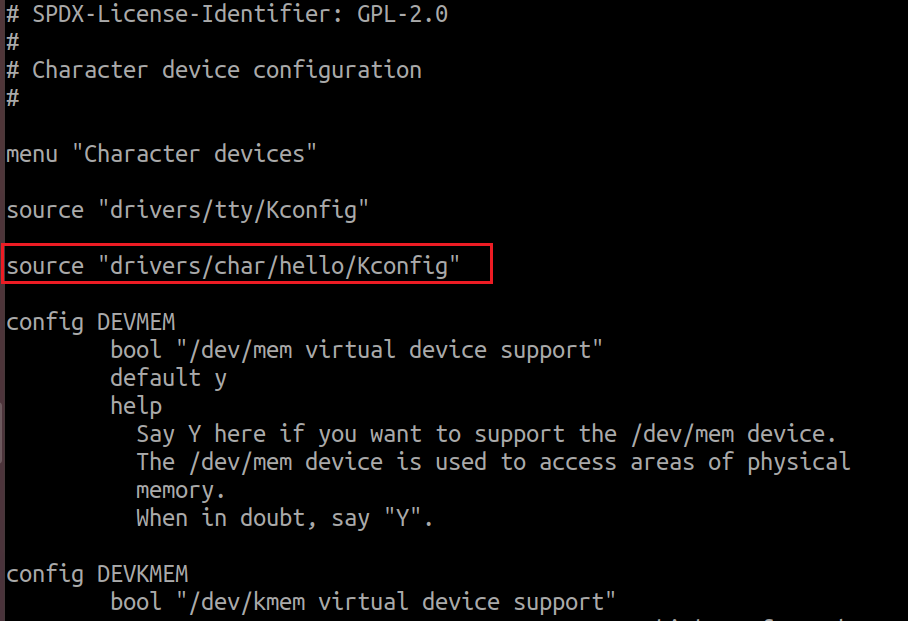
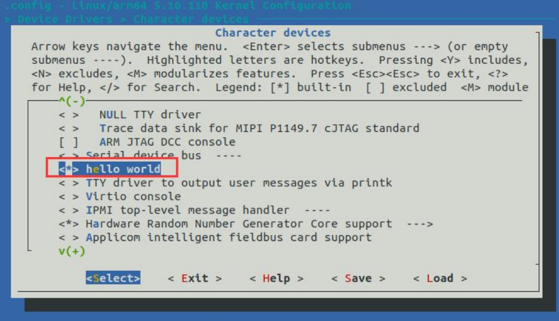
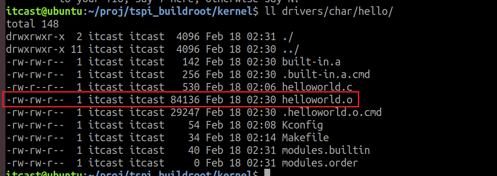
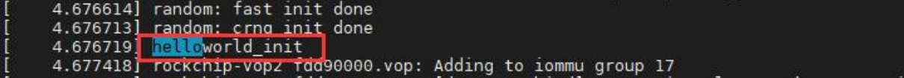
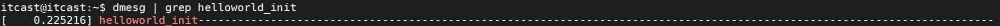

<!DOCTYPE lake>
<blockquote data-lake-id="ud13e78d2" id="ud13e78d2"><p data-lake-id="ua62efc40" id="ua62efc40"><span data-lake-id="u9fe01410" id="u9fe01410">以字符驱动模块编译进内核举例</span></p></blockquote><ol list="u93beb50a"><li data-lake-id="ubdc446be" fid="u1d918672" id="ubdc446be"><span data-lake-id="u1deb9027" id="u1deb9027">在kernel/drivers/char下创建hello文件夹</span></li><li data-lake-id="u235d1016" fid="u1d918672" id="u235d1016"><span data-lake-id="u08b5c8e7" id="u08b5c8e7">在hello文件夹下添加hello.c文件,编写驱动代码,内容如下</span></li></ol><span class="yuque-card-unsupported">[codeblock]</span><ol list="u5addbf41" start="3"><li data-lake-id="u1e8ac1d8" fid="u3445cee1" id="u1e8ac1d8"><span data-lake-id="udc078fda" id="udc078fda">在hello目录下增加Kconfig文件,内容如下</span></li></ol><span class="yuque-card-unsupported">[codeblock]</span><ol list="uf39e1505" start="4"><li data-lake-id="ucb7e988a" fid="u2ccb920a" id="ucb7e988a"><span data-lake-id="u626fd19e" id="u626fd19e">在hello目录下增加Makefile文件,内容如下</span></li></ol><span class="yuque-card-unsupported">[codeblock]</span><p data-lake-id="u378be306" id="u378be306"><code data-lake-id="u3006a8eb" id="u3006a8eb"><span class="lake-fontsize-12" data-lake-id="u11f36643" id="u11f36643" style="color: rgb(44, 44, 54)">obj-</span></code><span class="lake-fontsize-12" data-lake-id="u74c7bc9a" id="u74c7bc9a" style="color: rgb(44, 44, 54)">是内核构建系统中的一个变量前缀，表示“要编译进内核或模块的目标对象文件列表”。</span></p><ul list="u9e2469ff"><li data-lake-id="u4f1827be" fid="u33dac3a0" id="u4f1827be"><code data-lake-id="ubc74fca8" id="ubc74fca8"><span class="lake-fontsize-11" data-lake-id="u545642ea" id="u545642ea" style="color: rgb(97, 92, 237); background-color: rgb(239, 238, 255)">obj-y</span></code><span class="lake-fontsize-12" data-lake-id="ue6aafa50" id="ue6aafa50" style="color: rgb(44, 44, 54)">：表示该对象文件会被</span><strong><span class="lake-fontsize-12" data-lake-id="uc6c92562" id="uc6c92562" style="color: rgb(17, 24, 39)">编译进内核镜像（built-in）</span></strong><span class="lake-fontsize-12" data-lake-id="u40027629" id="u40027629" style="color: rgb(44, 44, 54)">。</span></li><li data-lake-id="uec08ace9" fid="u33dac3a0" id="uec08ace9"><code data-lake-id="ueab9cdd9" id="ueab9cdd9"><span class="lake-fontsize-11" data-lake-id="u92261cf0" id="u92261cf0" style="color: rgb(97, 92, 237); background-color: rgb(239, 238, 255)">obj-m</span></code><span class="lake-fontsize-12" data-lake-id="u3a8301c6" id="u3a8301c6" style="color: rgb(44, 44, 54)">：表示该对象文件会被</span><strong><span class="lake-fontsize-12" data-lake-id="ue3610200" id="ue3610200" style="color: rgb(17, 24, 39)">编译成可加载模块（.ko 文件）</span></strong><span class="lake-fontsize-12" data-lake-id="u5f57aef6" id="u5f57aef6" style="color: rgb(44, 44, 54)">。</span></li><li data-lake-id="u6906525a" fid="u33dac3a0" id="u6906525a"><code data-lake-id="uc8946512" id="uc8946512"><span class="lake-fontsize-11" data-lake-id="u3d2d8622" id="u3d2d8622" style="color: rgb(97, 92, 237); background-color: rgb(239, 238, 255)">obj-n</span></code><span class="lake-fontsize-12" data-lake-id="u68b46f4c" id="u68b46f4c" style="color: rgb(44, 44, 54)"> 或未定义：表示</span><strong><span class="lake-fontsize-12" data-lake-id="ua878982f" id="ua878982f" style="color: rgb(17, 24, 39)">不编译</span></strong><span class="lake-fontsize-12" data-lake-id="ua9611080" id="ua9611080" style="color: rgb(44, 44, 54)">。</span></li></ul><ol list="u31e620c1" start="5"><li data-lake-id="u9056994a" fid="ue2b91ea3" id="u9056994a"><span data-lake-id="u1377fec7" id="u1377fec7">在上一级目录</span><code data-lake-id="uf5599eaf" id="uf5599eaf"><span data-lake-id="ua2f09763" id="ua2f09763">kernel/drivers/char</span></code><span data-lake-id="ufe8ec6c8" id="ufe8ec6c8">下的Makefile,增加如下内容</span></li></ol><span class="yuque-card-unsupported">[codeblock]</span><p data-lake-id="u5041f131" id="u5041f131"></p><ol list="u77fbcc6a" start="6"><li data-lake-id="u043da683" fid="u81eecccb" id="u043da683"><span data-lake-id="uc3d0c443" id="uc3d0c443">在上一级目录</span><code data-lake-id="u268e40b0" id="u268e40b0"><span data-lake-id="u78471b0c" id="u78471b0c">kernel/drivers/char</span></code><span data-lake-id="ue2d535f3" id="ue2d535f3">下的Kconfig,增加如下内容</span></li></ol><span class="yuque-card-unsupported">[codeblock]</span><p data-lake-id="ue73c1fbf" id="ue73c1fbf"></p><ol list="u6ec108d7" start="7"><li data-lake-id="ue1bc676d" fid="ub33b298a" id="ue1bc676d"><span class="lake-fontsize-12" data-lake-id="u69814130" id="u69814130" style="color: rgb(0,0,0)">打开 menuconfig 图形化配置工具，在配置界面选择 helloworld 驱动。</span></li></ol><blockquote data-lake-id="ud4790e9c" id="ud4790e9c"><p data-lake-id="ua5ddc3a8" id="ua5ddc3a8"><span class="lake-fontsize-12" data-lake-id="ubd7da2a7" id="ubd7da2a7" style="color: rgb(0,0,0)">把驱动编译进 Linux 内核，用 * 来表示，所以配置选项改为*。如果想要将驱动编译为模块，则用 M 来表示， 配置选项改为 M。这里我们选择成 *</span></p></blockquote><span class="yuque-card-unsupported">[codeblock]</span><p data-lake-id="u201ff4ed" id="u201ff4ed"></p><p data-lake-id="u5f6ba3b1" id="u5f6ba3b1"><span data-lake-id="uf71bacaf" id="uf71bacaf">退出保存之后,再拷贝配置</span></p><span class="yuque-card-unsupported">[codeblock]</span><ol list="u2eb4f2be" start="8"><li data-lake-id="u55237b45" fid="ubd3e5f63" id="u55237b45"><span data-lake-id="u5f556b69" id="u5f556b69">重新编译内核</span></li></ol><span class="yuque-card-unsupported">[codeblock]</span><blockquote data-lake-id="u033eba9a" id="u033eba9a"><p data-lake-id="u1f9e14b0" id="u1f9e14b0"><span data-lake-id="uf6b3ae1e" id="uf6b3ae1e">编译成功之后,</span><span class="lake-fontsize-12" data-lake-id="ua223a42c" id="ua223a42c" style="color: rgb(0,0,0)">进入到 </span><span class="lake-fontsize-12" data-lake-id="u101994b5" id="u101994b5" style="color: rgb(0,0,0)">drivers/char/hello </span><span class="lake-fontsize-12" data-lake-id="u63e7418c" id="u63e7418c" style="color: rgb(0,0,0)">目录下，可以看到会生成对应的</span><span class="lake-fontsize-12" data-lake-id="u4cf54372" id="u4cf54372" style="color: rgb(0,0,0)">.o </span><span class="lake-fontsize-12" data-lake-id="u8d7e5887" id="u8d7e5887" style="color: rgb(0,0,0)">文件。就说明 </span></p><p data-lake-id="u08e332b2" id="u08e332b2"><span class="lake-fontsize-12" data-lake-id="u8a6c7379" id="u8a6c7379" style="color: rgb(0,0,0)">已经成功将驱动编译进内核。</span></p></blockquote><p data-lake-id="u8d015f4a" id="u8d015f4a"></p><p data-lake-id="u8da0bd45" id="u8da0bd45"><span class="lake-fontsize-12" data-lake-id="u90797aa3" id="u90797aa3" style="color: rgb(0,0,0)">将编译好的内核镜像烧写到开发板上后，在开发板系统启动的时候也可以成功看到加载 </span></p><p data-lake-id="uf0c98e6e" id="uf0c98e6e"><span class="lake-fontsize-12" data-lake-id="ue20b9c32" id="ue20b9c32" style="color: rgb(0,0,0)">helloworld 驱动，如下图</span></p><p data-lake-id="uf1b7d6b1" id="uf1b7d6b1"></p><p data-lake-id="u259908a7" id="u259908a7"><span data-lake-id="u00e23bbd" id="u00e23bbd">或者使用命令</span></p><span class="yuque-card-unsupported">[codeblock]</span><p data-lake-id="ud7bf7ea3" id="ud7bf7ea3"></p>